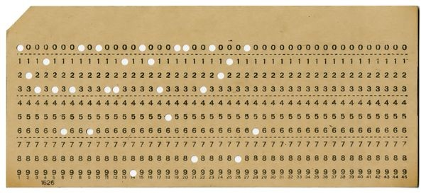

(photo by: Mark Richards)
Developed in 1946. With capacity of 256 to 4096 bits (32 to 512 bytes). The 4096-bit Selectron was 10 inches long and three inches wide..

(photo by: Computer History Mueseum)
Before computers often used punch cards to input both of programs and data. It was use until mid-1970's.
For computers, punch tape can also be used for data input and also as a medium to output data. Each row on the tape represented one character.
Invented in 1932 in Austria.Widely used in the 1950s and 60s as the main working memory of computers.
The first hard disc drive was the IBM Model 350 computer file that came with the IBM 305 RAMAC computer in 1956
The diskette was invented by IBM and in common use from the mid-1970s to the late 1990s. the primary floppy disks were 8 inches, and later in came 5.25 and 3.5-inch formats. the primary diskette , introduced in 1971, had a capacity of 79.7 kB, and was read-only.